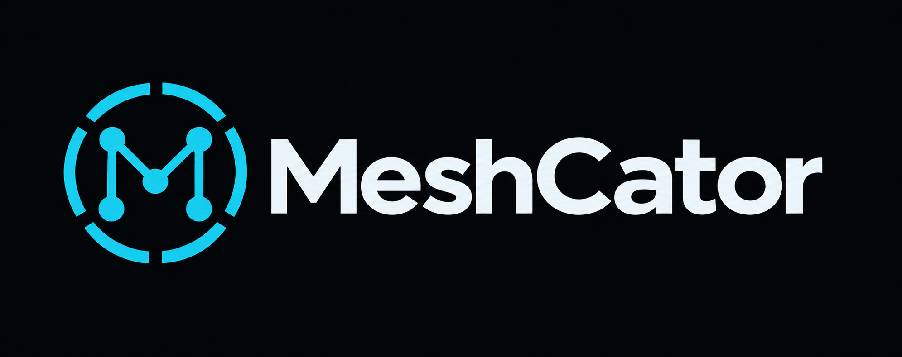

MESHCATOR / DESIGNSTUDIE 01
Ein ruhiges Feldinstrument.
Standalone-Mesh-Kommunikation für den LilyGo T-LoRa Pager. Maßhaltige Display-Entwürfe nach DESIGN.md: 480 × 222 Pixel, 20 px Statusleiste, 20 px Tastenhinweise. Alle Daten sind illustrative Beispiele; die Karte ist ein Schema.
IDENTITÄT / LOGO

Cyan steht für Fokus und Interaktion, Bernstein für Aufmerksamkeit. Das Logo verbindet Mesh-Knoten, ein M und einen Scan-Ring.
DESIGN-TOKENS
bg
#05080Csurface
#0B121Afocus
#122030line
#1E3246text
#E4EEF5muted
#8BA3B6cyan
#47C8E0amber
#F0A23Bgreen
#3CCB8A
12 EIGENE UI-GLYPHEN / 16-PX-RASTER
Native SVGs für die UI-Planung; vor Firmware-Einsatz in LVGL-Glyphen oder Bitmaps überführen. Schriftvorschau verwendet lokal vorhandene Inter/Arial bzw. Menlo. Font-Metrik, Sonnenlicht-Lesbarkeit und Encoder-Bedienung müssen auf Hardware geprüft werden.